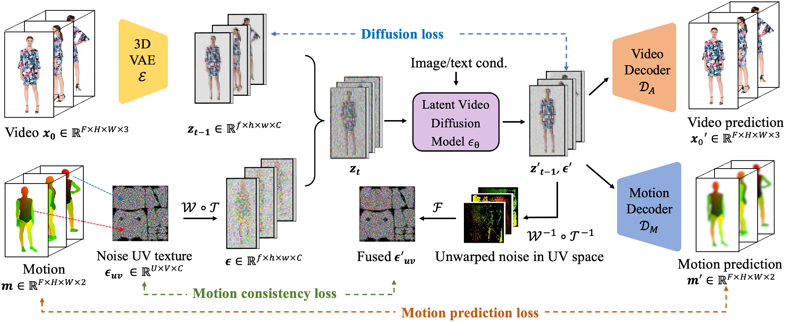

TL;DR: HumANDiff is a model-agnostic framework that generates temporally consistent human videos from a single image by modeling noise directly on the 3D human body, enabling intrinsic motion control. Our method produces stable motion and preserves fine-grained details (e.g., clothing and identity), outperforming prior approaches without additional motion modules.
Despite tremendous recent progress in human video generation, generative video diffusion models still struggle to capture the dynamics and physics of human motions faithfully. In this paper, we propose a new framework for human video generation, HumANDiff, which enhances the human motion control with three key designs: 1) Articulated motion-consistent noise sampling that correlates the spatiotemporal distribution of latent noise and replaces the unstructured random Gaussian noise with 3D articulated noise sampled on the dense surface manifold of a statistical human body template. It inherits body topology priors for spatially and temporally consistent noise sampling. 2) Joint appearance-motion learning that enhances the standard training objective of video diffusion models by jointly predicting pixel appearances and corresponding physical motions from the articulated noises. It enables high-fidelity human video synthesis, e.g., capturing motion-dependent clothing wrinkles. 3) Geometric motion consistency learning that enforces physical motion consistency across frames via a novel geometric motion consistency loss defined in the articulated noise space. HumANDiff enables scalable controllable human video generation by fine-tuning video diffusion models with articulated noise sampling. Consequently, our method is agnostic to diffusion model design, and requires no modifications to the model architecture. During inference, HumANDiff enables image-to-video generation within a single framework, achieving intrinsic motion control without requiring additional motion modules. Extensive experiments demonstrate that our method achieves state-of-the-art performance in rendering motion-consistent, high-fidelity humans with diverse clothing styles.

@misc{hu2026humandiff,
title={HumANDiff: Articulated Noise Diffusion for Motion-Consistent Human Video Generation},
author={Tao Hu and Varun Jampani},
year={2026},
eprint={2604.05961},
archivePrefix={arXiv},
primaryClass={cs.CV}
}